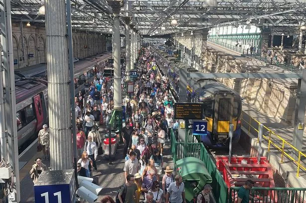
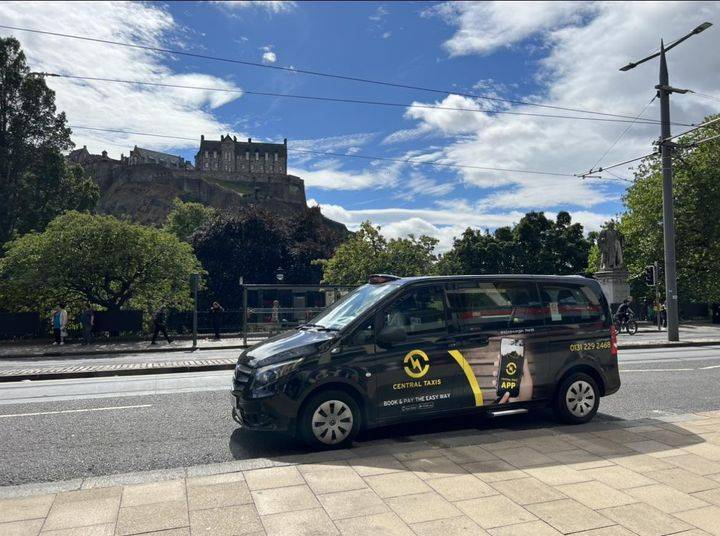

Buses in Edinburgh

How do they work?
Buses in Edinburgh follow an easy and efficient system, with 24 hour running buses and cheap rates:
A DAYticket offers unlimited use of lothian buses and trams for one day
A single journey ticket allows for one bus ride from anywhere to anywhere and cannot be reused.
- Adult Single: £2.00
- Adult DAYticket: £5.00
- Child Single: £1.00
- Child DAYticket: £2.50
Buses cover more than just the city however, there are also options for buses to the east coast, the airport, the Scottish Borders, and others.
Tickets can be purchased online on the Lothian Bus app or can be paid for on the bus
Bus times and routes can be viewed on the Lothian Bus app or at most bus stops
Trams in Edinburgh
How do they work?
Trams in Edinburgh follow a route from the airport to Newhaven, making them an excellent choice for transport from the airport to the city
Although there is only one route, there are many stops and destinations along the way that make them a good choice for getting around the city centre
Tickets are more expensive at the airport, Children under 5 go free, 5-13 years old will pay child prices.
- Adult Ticket at Airport: £7.50
- Adult Ticket in City: £2.00
- Child Ticket at Airport: £3.80
- Child Ticket in City: £1.00
A family ticket can be purchased for £8.00, and allows for infinite travel around the city for one day
Tickets can be purchased at machine at the tram stop, online, or on the tram for an extra fee of £10.
Tram times and routes can also be viewed at the stop, or on the app.

Trains in Edinburgh

How do they work?
Trains in Edinburgh are convienient and fast, and allow for travel outside of Edinburgh and even outside of Scotland!
Edinburgh has various train station locations such as Wester Hailes, Waverley, Haymarket, Newcraighall, and more.
Tickets can be purchased online or via the app, or at the station. Ticket prices differ on where you are going and the type of ticket:
- Single Ticket - For one way journeys
- Return Ticket - For a round trip between two points
- Day Travelcards - Unlimited train travel for one day
- Season Tickets - Cheaper alternative for locals or frequent train users
Trains allow for travel to some of Scotland's finest nature locations outside of Edinburgh such as Aviemore, Glencoe, and Loch Lomond.
Taxis in Edinburgh
How do they work?
Taxis are widely available in Edinburgh, and they offer an easier and faster way to get around.
There are several taxi companies in Edinburgh, such as City Cabs, Capital Cars, or Central Taxis
Uber is also available 24 hours a day, almost anywhere in the City centre
Taxi prices will differ based on company of choice and the destination.
However, an average price for a 3 mile taxi ride usually costs between £7.90 and £10.40
If you want to get a taxi, call one of the companies or install the Uber app.
